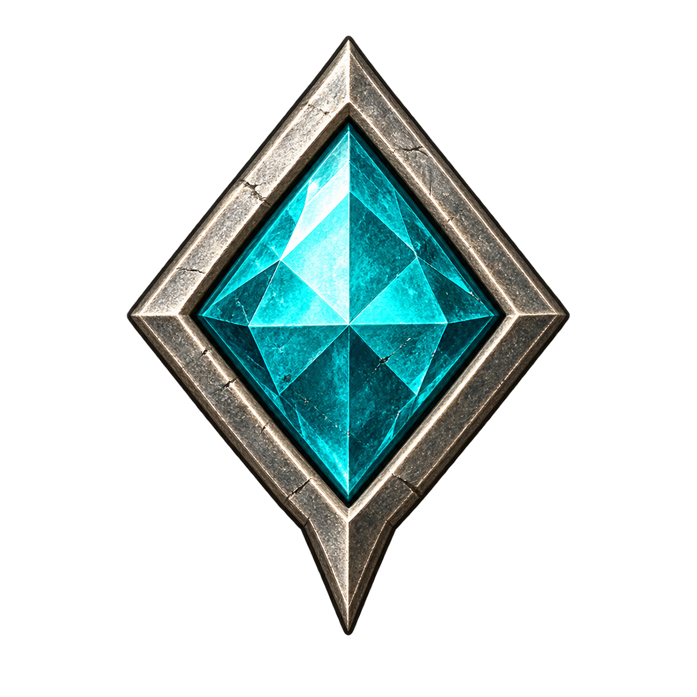

지도를 불러오는 중…
구획을 클릭해 상세도로 이동 · 끌어서 이동 · 휠로 그림 안 확대
국가·권역상세도 선택 영역국가·권역·거점

탐험지·일반 지점외곽 강조와 표식은 탐색 안내이며 실제 영토 경계가 아닙니다.VIRETH · ATLAS
지도를 불러오는 중…
구획을 클릭해 상세도로 이동 · 끌어서 이동 · 휠로 그림 안 확대

탐험지·일반 지점외곽 강조와 표식은 탐색 안내이며 실제 영토 경계가 아닙니다.